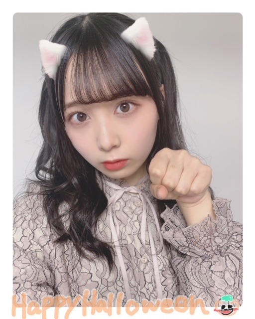
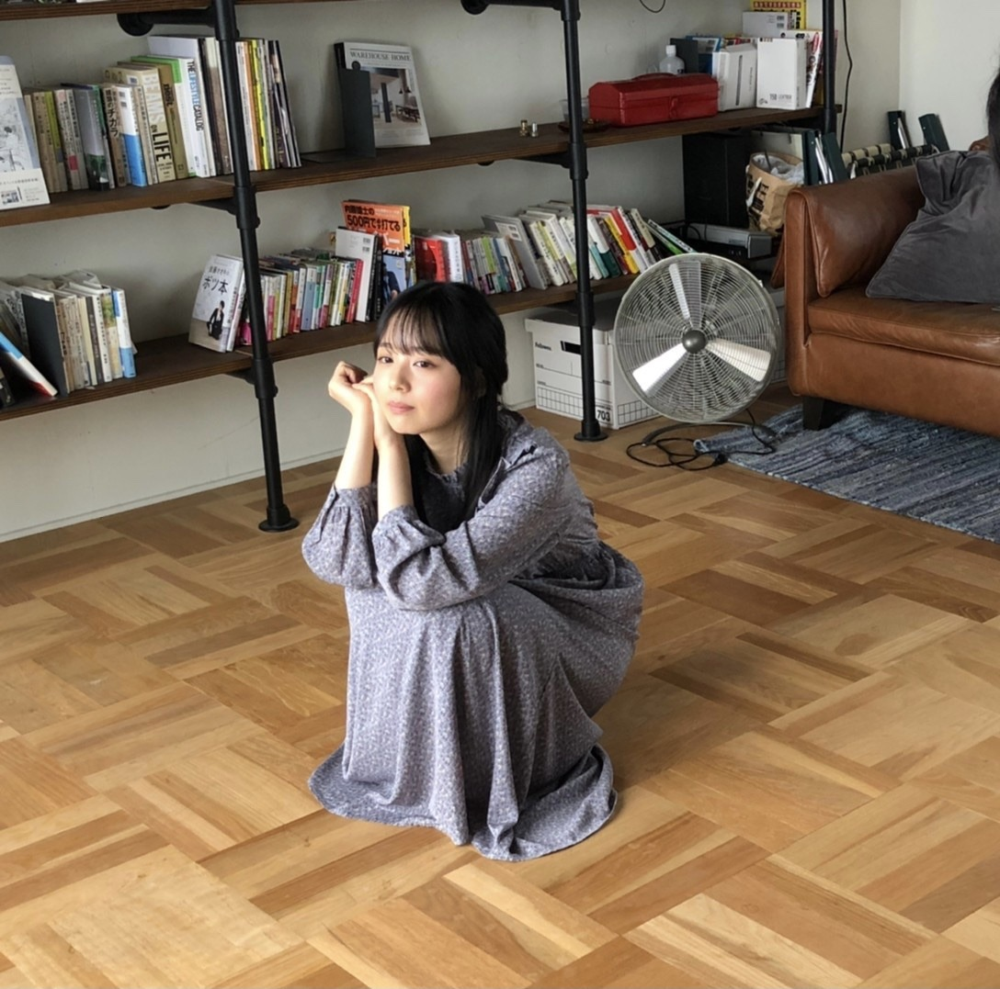

2020/1104Wed約束したけど。佐藤璃果
こんにちは~
乃木坂46 新4期生 岩手県出身
佐藤璃果です。

4日遅れのハロウィンです。
約束してましたよね！
ハーフツインやって欲しい！
との声もあったのでやってみました。
仮装...アプリの力を借りてしまった、、、。
ちゃんとした仮装ではなく申し訳ないですが
猫！
〇月刊エンタメさん、10月30日発売
台風が近づくとある日に撮影して頂きました。雨の中、屋上で傘をくるくると回し、
ルンルン自分も回転した事、
とても楽しかったです。
一度はやってみたかったことです✌︎
そして、瑠璃色から来ている、綺麗な青色の
ソファーでの撮影も、とても嬉しかったです。お洋服も瑠璃色ぽくて。素敵です。
ありがとうございました。
ブドウともお話してみました。
とても温かくて、楽しくて、
笑顔が溢れる撮影になりました( ˶˙ᵕ˙˶ )
梅澤美波さんと、有難いことに私のポスターもついてきます！
発売中です。
よろしくお願い致します。|˙꒳˙）

〇10月31日、ひかりTV・dTVチャンネルさん
｢山崎怜奈とおはつちゃん｣
究極の芋グルメを探しに行ってきました。
初めての食レポ、1人ロケ、、
お見苦しかったかも知れません（ ; ; ）
沢山、食レポの極意など、
ためになる事を教えて頂きました！
ありがとうございました。
そして、芋堀、焼き芋...
久しぶりに土を触ることが出来ましたし、
芋堀の場所がおばぁちゃん家の環境と似ていて、とても懐かしい気持ちになりました！
沢山ありがたい経験をさせて頂いたので、
沢山芋掘り頑張りました！！！！
焼き芋、美味しかったです( ˙༥˙ )
そして、山崎怜奈さんとお話出来たこと。
れなさんはお優しくて、
この収録の前日にリハがあったのですが、
そのリハの際に｢明日の収録よろしくね！｣
と声をかけてくださって。
驚いたんですが本当に嬉しくて有難かったです！
収録前も沢山お話してくれて。
本当に本当に嬉しかったです。
ラジオや番組等でお忙しかったり、おつかれかもしれないのに、
いろいろなお話をして下さるれなさん。
個人的な事も沢山お話出来て、、
本当に頼りになる先輩なんです。
なんて優しいんだ(><)
これからも沢山お話していきたいです♡
よろしくお願いします|˙꒳˙）
皆さん秋の味覚を楽しみましょう( ˙º˙ )
〇11月4日、ananさん
乃木坂46、
44名全員が anan の誌面に参加させて
頂いた中に出させて頂いています！
とてもうれしかったです。
編集部の方といろいろお話しできたり、
メイクさんにも新しい情報を教えて頂けて、とてもいい1日でした。
新4期内でのトークも大盛り上がりで、
今まで知らなかったことを沢山知れて
楽しかったです◎
今後も色々な事に挑戦していきたいです！
素敵な機会をありがとうございました。
長袖1枚でも寒い季節に
なってしまいましたが、
この空気感も何もかも、大事にしていきましょね。
どうか無理はなさらず\(◡̈)/
~~~質問~~~
〇ハロウィン前夜祭です！なにかしたいことはありますか？
トリックオアトリート！！！
〇もうすぐで10月も終わっちゃうね。なにか言い残したことはありませんか？
いつも本当にありがとうございます。
まだ会えていない方が多いけれど、それでも、これからもどうぞよろしくお願いします。
〇至福のひとときは何している時？
温まっている時と、コーヒーとスイーツを食べている時♡
〇璃果ちゃんは雪国出身なのでスキーとかは上手なんですか??
苦手です(´･×･`)
〇お菓子作ったことない初心者でも作りやすいものって何かある？作ってみたい
チーズケーキとか簡単じゃないかな！？
〇好きなジブリ映画はありますか？？
千と千尋の神隠し！！
〇チョコレートチーズケーキ初めて知ったんだけど、どんな感じの味がするの？？璃果ちゃん教えて！！
チーズの酸味と、チョコレート感
両方楽しめて、美味しいし、
食感も片目とレア、両方楽しめて、
一石二鳥です♡
〇家にこたつはありましたか〜？(東北だと出れなくなりそう)
ありましたよ~
よく寝ていました( ˊ꒳ˋ ) ᐝ
〇これからもりかちゃんのこと推し続けていいですか？？
ずっと一緒に居てください！！
〇スケートはやるー？
やったことあるけど、ノロノロ運転です...
〇璃果さんの名前を入力する時、「りか」と打っても変換候補に「璃果」が出てこないのですが、璃果さんのオススメの入力方法はありますか？
瑠璃果実
頭と後ろを消す！！
〇敬語でコメント書いているのですが、タメ語の方が嬉しかったりしますか？
そうですね、、、。
どちらでも嬉しいです◎
〇そう言えばロケ楽しかった？？笑
とっても楽しかったです☺︎
〇マスカットと巨峰はどっちが好きですか？
悩ましい、、、。
マスカット！！
~~~~~~~~~~~~~~~~~~~
明日はるなぴです。
オススメのオムライス屋さんに
いつか連れてってね♡
~~~~~~~~~~~~~~~~~~
皆さんにとって
素敵な1日になりますように。
後はぶりっ子して欲しいとのお声から！
ぶりっ子ポーズ？
またね。
#39 ？ りか
コメント(346)
おはつちゃん面白かったです！璃果ちゃんの影響で、お芋を食べるようになり芋が好きになりました！笑
らじらーも楽しみにしてます！
今週の日曜日らじらーだね！
すごい楽しみ！絶対聴くね！！
この前発売された月刊エンタメ毎日のように見てます笑
しぃなちゃんが掲載されている雑誌を見返すのが好きです！笑
さらなる活躍を楽しみにしてます！
大好きです！！！
ゆっちゃんより。
1発目からえーーぐい写真ですね笑笑可愛すぎて悶絶してました笑笑
Happy Halloween♡♡♡♡♡♡♡♡♡♡♡♡♡♡♡
りかちゃん今日もとっても可愛くて僕死にそうでちゅぅぅぅぅうううううううう♡♡♡♡♡♡♡♡♡♡♡♡♡♡♡♡♡♡♡♡♡♡♡♡♡♡♡♡♡♡♡♡♡♡♡♡
僕に早くいたずらしてほちぃでちゅぅぅぅぅぅうううううううう♡♡♡♡♡♡♡♡♡♡♡♡♡♡♡♡♡♡♡♡♡♡♡♡♡♡♡♡♡♡♡♡♡♡♡♡♡♡ぶりっ子ポーズもとっても可愛い♡♡♡♡♡♡♡♡♡もうだいだいだーーーーーーーーーーーーーーいちゅきっ♡♡♡♡♡♡♡♡♡♡♡♡♡♡♡♡♡♡もう璃果ちゃんが世界で1番だねっ！！♡♡♡♡♡♡♡♡♡♡♡♡♡♡♡♡♡♡♡♡♡♡♡♡♡♡♡♡♡♡
また次のブログでぶりっ子ポーズ楽しみにしてるね♡♡♡♡♡♡♡♡♡♡♡♡♡♡♡♡♡♡♡♡♡♡♡♡♡♡♡♡♡♡♡♡♡♡♡♡♡♡♡ちゅちゅちゅちゅちゅ〜♡♡♡♡♡♡♡♡♡♡♡♡♡♡♡♡♡♡♡♡♡♡♡♡♡♡
璃果ちゃんブログ更新ありがとう〜！
月刊エンタメ買ったよ！璃果ちゃんのポスター飾ろうと現在額縁探し中です笑
おはつさんも見たよ〜
璃果ちゃんのさつまいも愛が溢れてて、食リポも分かりやすくて見ててあっという間の時間やったな〜
これからもっと先輩との関わり増えていって欲しいなぁー
そのハロウィンの写真可愛すぎます！！
ハロウィンもう過ぎちゃったけど、璃果ちゃんは何かハロウィンに仮装したりなんかイベント？みたいなことしたー？？？
んじゃ11月になって大晦日までのカウントダウン始まりそうやけど、こっからまた頑張っていこー
今は僕は仕事終わりなので、家に帰ってから、
またしっかりとしたコメント書くので、楽しみにしといてね！
コメント返しありがとう！！！
スキーは苦手なんですね、ww
そんな璃果ちゃんも可愛いです( ᷇࿀ ᷆ )♡
そして！ぶりっ子！！！
ほんとに可愛すぎる（ ; ; ）
待ちに待ってたのですごくすごく嬉しいです！！
質問です( ¨̮ )
◎ 璃果ちゃんが今ハマってる曲はありますか??
◎ 地元の魅力を一言で表すとなんですか??
◎ 璃果ちゃんが一番好きな髪型はなんですか??
◎ 佐藤璃果ちゃんに早く会いたいです(⑉• •⑉)‥♡
いつも癒しをありがとう(T ^ T)
まなより
やばいやばいやばい、ハロウィンの写真可愛すぎる！
猫耳も半端ないし、ハーフツインもヤバすぎる
ちょー飼いたい笑
璃果ちゃんが出てる雑誌いっぱいあるな、エンタメさんも買わなな！
れなちとのお仕事お疲れさま！
れなち凄いな、めっちゃメディア出てるもん。
れなちとお仕事出来て良かったね！
anan今日発売か！今日は雨降りやし、やんだ日にでも買いに行きます！
メンバーが全員でてるananは毎回買ってるから、今回はどんなふうになってるか楽しみやわ〜
キャー！最後のぶりっ子もまたかわいい！
何しても可愛いね
またブログ更新楽しみにしてます！
(=ﾟωﾟ)ﾉﾎﾅ､ﾏﾀ!!
ハロウィンだったね。楽しい1日過ごせたかな？次はクリスマス。楽しもう！
ー質問ー
・写真集を発売するならどこで撮影したい？
・乾燥肌に悩んでいるけど、良い対策はあるかな？
・気晴らしではよく何をする？
ありがとう！次回も楽しみにしているよ。
焼き芋以外に美味しいさつまいもの料理はありますか??
ハーフツインかわいい！
りかちゃん、ほんとに可愛い！！
anan絶対買うね〜！！
楽しみだよ〜
(5k+4)日で覚えます。(少し理系っぽい)
更新ありがとう！
こたつでコーヒーとスイーツ最高よね！
今週のらじらーサンデーに璃果ちゃんが出ると聞いてから未だに眠れないです そんなに気負わずに頑張ってね！
ーーーーー質問ーーーーー
ぶりっ子が可愛いすぎることが判明したので握手会で頼んだらしてくれたりする？
日向坂46のアザトカワイイみたいなぶりっ子ポーズ似合ってる
最近寒くなってきたから
体調崩さないようにね
それではこの辺で
かっきーと同郷の マサシ◢
遅ればせながら、トリックオアトリート〜〜〜
璃果ちゃんの家ではハロウィンで何か特別なことしてましたか？
ぼくはいつも通り友達と過ごしていました。日常の大切さが身にしみる。。。
課題の提出がもうすぐなので、今日は短めで。
あ、今日は良い推しの日らしいよ。オーディションで初めて知ってからもう2年かな？
璃果ちゃんを推してて本当によかったと思えるよ！
そんじゃ、また！！
4日遅れのハロウィンおめでとう！
璃果ちゃんのハーフツイン可愛いよ！
璃果ちゃんの大先輩の山崎玲奈さんと話できて良かったね！
私も山崎玲奈さんとの話ししてる璃果ちゃんが大好きだよ！
〜質問〜
➀公式ブログはどのアプリを使ってブログを書いてますか？
➁ハロウィンは何をしましたか？
➂ハロウィンケーキは食べましたか？
またね！
おはつちゃん見ましたよ
焦げてしまったお芋も美味しそうに食べていて可愛かったです さつまいもにマーガリン塗って食べるのめっちゃ美味しいですw
質問 他にも初めてやる事やってみたい事ありますか？
チャァオ〜〜〜!☆彡
りかちゃん❕❤️❤️❤️笑顔
おいらも、仕事帰りにスーパーで熱々の焼き芋をよく買います❕笑顔
家についたら、温めなおす為に
食欲増進の為に、バーナーで皮をめっちゃ焼いてから頂きます❕笑笑
(＠＾▽゜＠）ゞ❤️❤️❤️
❇️❇️おすまし！⚜️❇️⭐彡
りかちゃんハーフツイン可愛い可愛いので見たいです！！！
--質問--
・おすすめのフレグランスありますか？
・小さい頃の夢はなんですか！
・洋画観ますか？
ユカシと申します、どうぞお見知りおきを。
月刊エンタメのグラビア、拝見しました。
1頁目から目力全開の写真にくぎ付けになりました。
だけど、一番印象的だったのは4頁目の4分割の笑顔の写真、すごく自然な、なんて素敵な笑顔。グラビアで吸い込まれるような感覚を、久々に体感しました。
笑顔が素敵な佐藤璃果さん、思わずコメントしてしまいました。
また書きます。
ユカシ
おはつちゃん見ましたよ
焦げてしまったお芋も美味しそうに食べていて可愛かったです さつまいもにマーガリン塗って食べるのめっちゃ美味しいですw
質問 他にも初めてやる事やってみたい事ありますか？
猫のりかちゃんがめっちゃ可愛いよ
うちで飼えないかな？なーんて
エンタメのグラビアの写真もめっちゃよかったよ
特に洋服とりかちゃんと背景がすごい似合ってて、一枚一枚の写真がめっちゃ好きだった
あと、璃果って漢字を入力する時はユーザー辞書に名前を登録する方法があって、そうすれば「りか」って入力すれば自動的に変換してくれるから便利だよ！
じゃ、次もコメントするね
璃果ちゃんは本物の天使なんですか？(←一応これ質問って事で笑)
これからもずっと推して行くからよろしくね！
次回のブログも楽しみにしてる！
番組見ました！りかちゃんほんとにお芋好きなんですね！癒されました
更新 おつかりかぴさま 。。
その ねこちゃんには
どこに行けば 会えますかね？ 笑
(来年は コロナの対応が出来て 再開するといいね)
ねこの中に 結晶りっかの タイプが あったよ
ではでは 木枯らし１号が 吹いた 東京ですが
あたたかくして 元気に.. ごきげんよう〜 。。
ハピハロニャン〜
次はクリスマス〜ニャン
楽しみニャン〜
ハピハロニャン〜
次はクリスマス〜ニャン
楽しみニャン〜
いつもコメントしている
janpoi(じゃんぽい)だよ！！！
コスプレりかちゃん可愛すぎる(๑♡ᴗ♡๑)
これからも色んなコスプレして欲しいな
ananで乃木坂全メンバー出るんだね楽しみ(*ﾟ▽ﾟ)ﾉ
〜質問〜
〇よく見るyoutuberはいる？
〇最近の砂糖掛けのエピソードは？
〇スキッツ3期も入るけど
仲良くなりたい人はいる？
今回もブログ更新してくれてありがとう〜
次もたのしみにしているね！
体調管理に気をつけて頑張ってね
ブログ更新してくれて、ありがとう！個人的に久々にコメントします。
1枚目のハーフツインで加工したやつと5枚目のぶりっ子ポーズ最高です！！
修士の研究が上手くいかなくて頭抱えてたら、めっちゃ癒されて元気出ました。
以下、質問です。もしよかったら答えて貰えると嬉しいです！
・今度、仙台方面に2泊3日の日程で旅行行くのですが、東北出身の璃果ちゃんからオススメの場所や行った方がいい場所あれば教えてもらいたいです！よろしくお願いします。
それでは寒さが増してきた時期ですがお身体に気をつけて頑張ってください。
ハーフツイン可愛い〜萌える、尊い
月刊エンタメさんのはまだ見れてないからちゃんと見るね〜
おはつちゃん見たよ、もぐもぐ姿可愛かった
質問
ブログの人の名前とか覚えますか？
コメントする

PROFILE
新4期生リレー
202104
| SUN | MON | TUE | WED | THU | FRI | SAT |
|---|---|---|---|---|---|---|
| 1 | 2 | 3 | ||||
| 4 | 5 | 6 | 7 | 8 | 9 | 10 |
| 11 | 12 | 13 | 14 | 15 | 16 | 17 |
| 18 | 19 | 20 | 21 | 22 | 23 | 24 |
| 25 | 26 | 27 | 28 | 29 | 30 | |

月刊エンタメ購入させて頂きました！
薄手のパーカーのような服を着ていた璃果ちゃんがとくに好きでたまらんでした！
璃果ちゃん最近外仕事も増えてきて大変だと思うけど頑張ってください！応援してます！
さてさて、もう気づいたら11月になりましたね。
この1年あっとういうますぎるよね。
話は変わりますが、なんと！ついに！
我が家にりんごの季節がやって来ました笑
璃果ちゃんは、りんごすき？
勝手な解釈だけど岩手県民だからりんご好きなのかなって思ってるよ笑
りんごめちゃくちゃ美味しいよね！
個人的にはスったやつご好き
質問コーナーお願いします
Q好きなリンゴの品種ありますか？
Qリンゴ狩りって行ったことありますか？
Q雪だるま作りと雪合戦どっちが好きですか？
良かったらお答えお願いします
またコメントするね！またねー
PS.裸足でななよだ(きょうすけ)